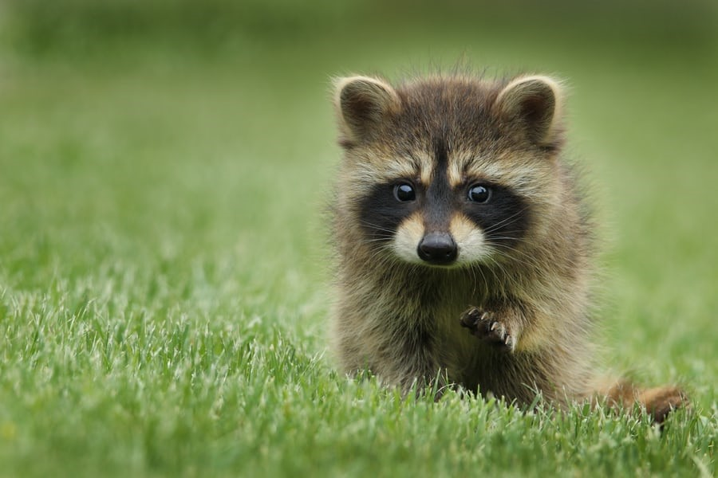

너구리의 순간들
2021년
너구리의
일상
을 글과 사진으로 기록하기
이 사이트는 웹사이트 만들기 연습용으로 제작되었음.
너구리는 진짜가 아닌 나의 별명♥
올해 있었던 주요한 일, 맛있는 음식, 지인들과 보낸 시간 등을 하나씩 올려보며 테스트 예정 중.

주요한 일
맛있는 음식
지인들과 보낸 시간
지인들과 보낸 시간
- 4월 28일 ~ 5월 1일 : 오리랑 제주도 여행
- 9월 21일 ~ 9월 22일 : 가족과 경주 여행
- 10월 2일 : 높드리언니 결혼식